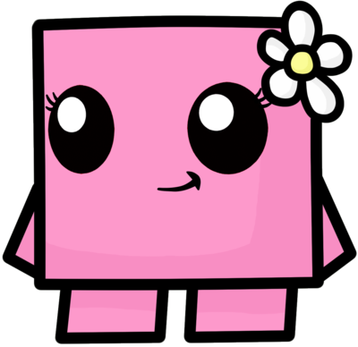
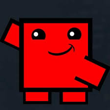

<html>
  <head>
    <title>
    </title>
    <style>
      @font-face {
        font-family: "scratch";
        src: url("fonts/scratch.woff") format('woff');
      }
      @font-face {
        font-family: "edge";
        src: url("fonts/Edge.ttf") format('ttf');
      }
      body{
        background: #e01b1b;
      }
      #text{
        position: fixed;
        background: #bd1616;
        word-wrap: break-all;
        text-transform: capitalize;
        font-weight: normal;
      }
      #image > img{
        top:55%;
        position: fixed;
        height:250px;
        width:250px;
      }
      #image-big > img{
        top:10%;
        position: fixed;
        height: 70%;
        width:70%;

      }
    </style>

  </head>
  <body>
    <div id="head"></div>
    <div id="text"></div>
  </body>
  <script type="text/javascript">
      function resize_tile(el){
        el.style.height = 3*(window.innerHeight/4) + (window.innerHeight/16);
        el.style.width  = 3*(window.innerWidth/4);
        el.style.top    = (window.innerHeight/8);
        el.style.left   = (window.innerWidth/8);
      }
      function process_text(el, content){
        // set font size according to length of the text
        var num_words = content.split(' ').length;

        if(num_words <= 15){
          el.style.fontSize = 120;
        }
        else if(num_words <= 30 && num_words > 15){
          el.style.fontSize = 64;
        }
        else{
          el.style.fontSize = 38;
        }
        el.style.fontFamily = "scratch";
        text.innerHTML = content;
      }

      var text = document.getElementById('text');
      resize_tile(text);
      var t=["<center> Hi.</center> ",
            "<center>Long time right?</center>",
            "<center>You might be curious as to what is going on!!</center>",
            "<center>This is a small untold story.</center>",
            "<center>Lets begin with introduction!</center>",
            "<center>So this is me!!</center> <div id='image'></div>",
            "<center>AaaaaaaaNd</center>",
            "<center>That's you :)</center> <div id='image'></div>",
            "<center> Let's rewind time. </center>",
            "<center> 2011 </center>",
            "I was this guy who had lot of things to be done but less time to do. I was an innocent kid who had no interest in girls. But.... I had friends, these people started mocking me with a girl. Meh <div id='image'></div>",
            "<center>And I was like </center><div id='image'></div>",
            "<center> Sad right :P</center>",
            "<center>This mockery was going on and on............</center>",
            "<center>Arrrrrrgghh</center>",
            "This had to stop. Idea !! <div id='image'></div>",
            "I told my friends, Guys, Stop mocking me with that girl!! I have a crush on someother girl  <div id='image'></div>",
            "They were like WHAAAAAAAAT !! ",
            "Yessss Bitches :) <div id='image'></div>",
            "Lol, Yessss I won the battle :) <div id='image'></div>",
            "But not really :(",
            "They started pestering who it was",
            "Oh damn!! <div id='image'></div>",
            "Time to point out the girl",
            "Best place to point a girl was near the computer lab",
            "You know why :P",
            "<center> Rules of picking the person formulated : </center> <p> 1) My friends should not know her personally.</p> <p> 2) It shouldnt be a girl from my class. </p> <p> 3) It shouldnt be a crush of someone else. </p> <p> 4) She should know me atleast a bit so that i can reason out why i like her.</p>",
            "<center>The day!!</center> <center> <div id='image'></div> </center>",
            "So, my friends were like lets go. Show us whom you like. <p> We were walking in the corridor and I was wondering which girl would work by the rules. </p> <p> Then I saw <b> you </b>. </p> <p> You fit perfectly into the rules. </p> <b> Andddddd the craziness began. </b> ",
            "<p> To start with, I just saw you as my escape highway. </p> <p> But after that day, I started noticing you very often. I would just loiter around your class during breaks. <center> <div id='image'></div> </center>",
            "<p style='font-size: 64px'> Next Rajesh Koothrappali in the making :P </p> <center> <div id='image'></div> </center> ",
            "<p> I would bunk classes whenever you had computer lab and would randomly come to the lab. Suraja ma'am didnt bother much, maybe because Her name was a super set of my name :P </p>  <p> Sometimes you guys would come to my class for computer classes, I would shout answers and show off. Bleh, No use i guess :P </p>",
            "Not like this though :P <center> <div id='image'></div> </center>",
            "Ahh... You were this <b> slow poison </b> <div id='image' style='height:200px width:200px'></div>",
            "<center>Toxicity increased in no time :P </center><div id='image'></div> ",
            "I am person who would question every phenomenon. I questioned myself, why is all this happening? First time in life i couldnt relate an answer. But i didnt feel non-sensical at any point of time. <p> Weird right? </p> <center> <div id='image'></div> </center> ",
            "Time went by and I didn't stop. I was happy to see your face. <p> Nothing more, Nothing less! </p> <center> <div id='image'></div> </center> ",
            "Like the penrose stairs  <center> <div id='image'></div> </center> ",
            "<center> I continued to stay in the same level forever. </center>",
            "<center> You might wonder!! </center> ",
            "<center> What's wrong with this guy? <div id='image'></div> </center> ",
            "<center> Answer is keep wondering, atleast i made you wonder :P  <div id='image'></div> </center> ",
            "<center> Next question <p> Why did I ask you out?</p> </center>",
            "<center> I wont make you wonder on this question </center ",
            "<center Before all that let me introduce the enemy <div id='image'></div> </center>",
            "<center> Who is this guy? </center>",
            "<center> Meet my counter-part!!! <div id='image'></div> </center>",
            "<center> Let's name him 'eidos' </center>",
            "<center> Cool name right?? </center> ",
            "<center> He surely is a creep :P </center>",
            "<center> How is eidos different from me? </center>",
            "<center> To put in simple words, <p> For him, a minute in human world is not what you do in 60 seconds. Rather it is what you experience and how we experience it.</p></center>",
            "<div id='image-big'></div>",
            "<center> He even believes that every human has a world inside them and also tends to conclude, he,himself has a world inside him. <b> Weird person he is </b> </center>",
            "<center> February 2012 </center>",
            "<center> So it was board exam study holidays, I tried a lot to not miss you. Just seeing you ofcourse.<p> <b> I couldn't.</b></p> </center>",
            "<center> eidos asked me <b> 'Why dont you ask her out?'</b> </p> </center>",
            "eidos was like this guy trying to eat your head :P <center> <div id='image'></div> </center> ",
            "eidos told <p>  'Man!  This could be the very last few days you meet her!!  Just tell her what you feel.' </p> <p> Even though it is of no use, it would fetch you your dose of satisfaction. </p> <center> <div id='image'></div> </center>",
            "I tried resisting eidos for a long time! All throught out our board exams <center> <div id='image'></div> </center>",
            "I would say 'Please, Not this' ",
            "<center> But.....</center>",
            "<center>The Unthinkable day!!</center>",
            "<center>It was computer science board exam!! </center> ",
            "I didnt have much to study as usual and not like i wanted to study !!",
            "<center> During the exam!! </center>",
            "<center>A conversation between myself and eidos <center>",
            "<b> eidos </b>: What's wrong with you?, write the fucking answer!! <p> <b> Me </b>: I thought about it!! </p> <p> <b> eidos </b>: About what? </p> <p> <b> Me </b>: About asking her out!! </p> <p> <b> eidos </b>: Ahaan, I told you!! </p> <p> <b> Me </b>: Yes, you are right! I wont meet her after this and it makes me sad. </p> ",
            "<b> eidos </b>: So Are you going to? :P <p> <b> Me </b>: I dunno, I am scared!! </p> <p> <b> eidos </b>: Why are you scared? </p> <p> <b> Me </b>: Dude, it is not like asking for chocolates in a shop!! </p> <p> <b> eidos </b>: Haha! I agree. What do you worry about then? </p> <p> <b> Me </b>: Won't it be awkward? </p>",
            "<b> eidos </b>: Lol, Surely it is awkward! <p> <b> Me: </b> Then, Why do you think i should tell her? </p> <p> <b> eidos </b>: Hmm, Nice quesiton. I personally feel you shouldnt then!! </p> <p> <b> Me: </b> Dont answer like a girl, Please reason out </p>",
            "<b> eidos </b>: Oye dont judge me!, Ok fine! Lets draw the reasons out, <p> <b> Me </b>: Go Ahead! </p> <p> <b> eidos </b>: Ok! Technically, you dont have anything to lose! Let's assume you tell her your feelings for her! What's gonna happen? </p> <p> <b> Me </b>: Hmm, She is gonna freak out! </p> <p> <b> eidos </b>: Wow, You make sense :P </p>",
            "<b> Me </b> Don't make fun of me ass! <p> <b> eidos </b>: Haha, fine dont cry :P, See, If i were you, I consider this as an experience. </p> <p> <b> Me </b>: What experience?? </p> <p> <b> eidos </b>: One not to be forgotten! ",
            "<b> Me </b>: Not to be forgotten?? How so??, One would want to forget this experience in life <p> <b> eidos </b>: Nopes, It doesn't work that way, Though you know it is going to be a flop, You would still laugh at this incident after years and there is little chance you are going to meet her anyways. </p> <b> Me </b>: I agree that there is no consequence!, But do i have to do it? </p> <p> <b> eidos </b>: I don't know that! See her face and decide. </p>",
            " <b> Me: </b>: But what is the gurantee that she even understands what we speak(actually what i think) ? </p> <p> <b> Eidos </b>: She wouldn't and blame is on you, but remember, that knowledge of anything outside one's own mind is unsure. Your mind and her mind cannot co-exist unless you share something with her. And clearly you haven't done shit. It is going to be only for your personal satisfaction, you are pulling this stunt.</p> <p> <b> Me </b>: So what should i do?</p> ",
            "<b> Eidos </b>: Just satisfy your empty intuitions.<p> <b> Me </b>: So you are leaving me on my own </p> <p> <b> eidos </b>: Yes, you know what to do. Trust your intuitions. But finish this paper and do whatever you want :P <center> <div id='image'></div> </center> ",
            "<center> Exam got over </center>",
            "<center> Bus dropped all of us, I couldnt find you in the exam center  <div id='image'></div>  <center>",
            "<center> I wanted to see you for once and all. </center>",
            "<center> Search Search......... <div id='image'></div></center>",
            "I saw you with your friends walking towards me",
            "<center> Black out.......... </center>",
            "<center> eidos took over <div id='image'></div> </center>",
            "The switch was as perfect as possible ! <p> Dont know how eidos pulled it off :( </p> <p>  Kedi bugger </p> ",
            "I could hear you saying 'No, I dont feel that way'. ",
            "<div id='image-big'></div>",
            "Omg, What did I just do!!!",
            "I was just able to walk away! <p> Soon i started to accept that it is over and I did it and as eidos said, It made me feel special and it was a memorable experience. </p>",
            "<center> I am sorry if it had offended you! </center>",
            "<center> My sincere apologies </center>",
            "<center> Now </center>",
            "<center> Next question! Why all this after 4 years? </center>",
            "<center> <div id='image'></div> <center> ",
            "Again eidos the charmer gave the idea, He was like imagine how would a girl feel to be shown this story after 4 years. ",
            "<center> So I thought rather than complaining about it </center>",
            "<center> let's write what i feel </center>",
            "<center> There you go </center>",
            "<center> I dont expect you to like it, I just expect to not creep you out anymore </center>",
            "I am a person who doesn't give a crap about birthdays, or wish others for birthdays. I dont remember dates as well. <p> Though, I would remember yours all my life! ",
            "<center> Happy Birthday <div id='image'></div> </center>",
            "To the only crush I have had. Adios. <center> <div id='image'></div></center>"

            ];
      var t_num=0;
      document.addEventListener("keypress",function(e){
          e = e || window.event;
          if(e.keyCode == 32 && t_num< t.length){
              process_text(text, t[t_num]);
              t_num++;
          }
      }, false);
    </script>
</html>
